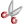

|
Rectangle Selection |
Allows selection in rectangle mode on mouse drag. |
|
Lasso Selection |
Allows selection in lasso mode on mouse drag. |
|
Structure Selection |
Allows selection in structure selection mode on mouse drag. With this selection mode only whole fragments can be selected. |
|
Erase |
Removes all structures upon selection. |
 |
Undo |
Reverses the last command or the last entry you typed. |
 |
Redo |
Reverses the action of the last Undo command. |
|  |
Cut |
Removes and copies the selection to the clipboard. |
|
Copy |
Copies the selection to the clipboard. |
 |
Paste |
Inserts the contents of the clipboard at the location of the cursor, without replacing selection. |
 |
Zoom In |
Increases the canvas's magnification. |
|
Zoom Out |
Decreases the canvas's magnification. |
|
Zoom Tool |
Changes the canvas's magnification to a specific value.
It can also do autoscale using named values: All, Selection, Scaffold, R-groups. |
 |
Help Contents |
Shows MarvinSketch User's Guide. |
The tools consist of various command groups. The tools having chemical meaning
(like bond or reaction arrow) are drawn in black lines, while strictly graphical objects
are in blue. You can place for example only ONE reaction arrow on the canvas, but
as many graphical arrows as you wish and they will look completely identical.
 |
Insert Bond |
Places various bond types on the canvas. |
|
Insert Chain |
Places a carbon chain on the canvas. The number of carbon atoms can be increased or decreased by dragging the mouse. |
|
Insert Text |
Places a Text object on the canvas. Allows changing text properties on the appearing toolbar. |
 |
Insert Reaction Arrow |
Places various reaction arrow objects on the canvas. |
|
Create Group |
Creates a custom abbreviation group. |
|
Insert Brackets |
Places brackets, parentheses, chevrons or braces on the canvas. |
 |
Insert Graphics |
Places various graphical objects on the canvas. |
|
Increase Charge |
Increases the charge of the selected atom. The number of implicit hydrogens will be adjusted if possible to accommodate the new charge. Valence errors will be highlighted in red. |
|
Decrease Charge |
Decreases the charge of the selected atom. The number of implicit hydrogens will be adjusted if possible to accommodate the new charge. Valence errors will be highlighted in red. |
|
Periodic System |
Shows periodic system and query/atom property drawing window. |
|
Insert Hydrogen |
Places Hydrogen atom on the canvas. |
|
Insert Carbon |
Places Carbon atom on the canvas. |
|
Insert Nitrogen |
Places Nitrogen atom on the canvas. |
|
Insert Oxygen |
Places Oxygen atom on the canvas. |
|
Insert Sulfur |
Places Sulfur atom on the canvas. |
|
Insert Fluorine |
Places Fluorine atom on the canvas. |
|
Insert Phosphorus |
Places Phosphorus atom on the canvas. |
|
Insert Chlorine |
Places Chlorine atom on the canvas. |
|
Insert Bromine |
Places Bromine atom on the canvas. |
|
Insert Iodine |
Places Iodine atom on the canvas. |